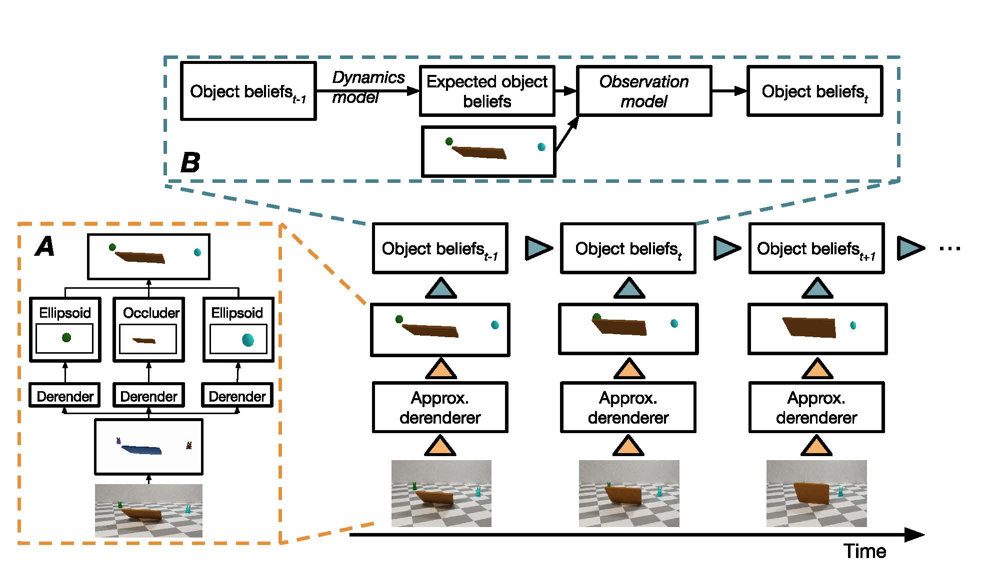
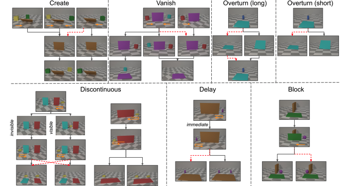
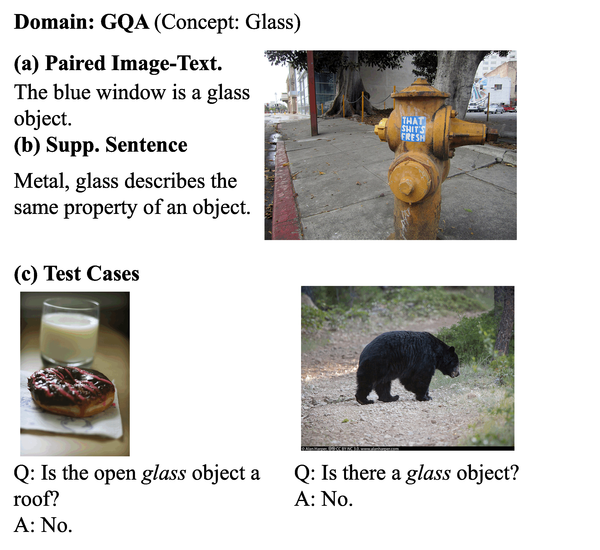

I am an incoming PhD student at Princeton, majoring in Computer Science. I did my B.Sc. and M. Eng. at MIT, working with Professors Joshua Tenenbaum and Jiajun Wu. Here is my CV.
Research Interest
My research objective is to build models that can learn and reason about the physical world by integrating language, motion, and commonsense knowledge. In particular, I am interested in the domain of concept learning, visually grounded language learning and scene understanding. My grand vision is to build a machine that continually learns new knowledge and applies the knowledge in the reasoning and action in the physical world, like what humans do.
Publications ( show selected / show all by date / show all by topic )
Topics: Scene Understanding. Concept Learning (* indicates equal contribution)

Modeling Expectation Violation in Intuitive Physics with Coarse Probabilistic Object Representations
Kevin Smith*, Lingjie Mei*, Shunyu Yao*, Jiajun Wu, Elizabeth S. Spelke, Joshua B. Tenenbaum, Tomer Ullman

The fine structure of surprise in intuitive physics: when, why, and how much?
Kevin Smith*, Lingjie Mei*, Shunyu Yao*, Jiajun Wu, Elizabeth S. Spelke, Joshua B. Tenenbaum, Tomer Ullman
